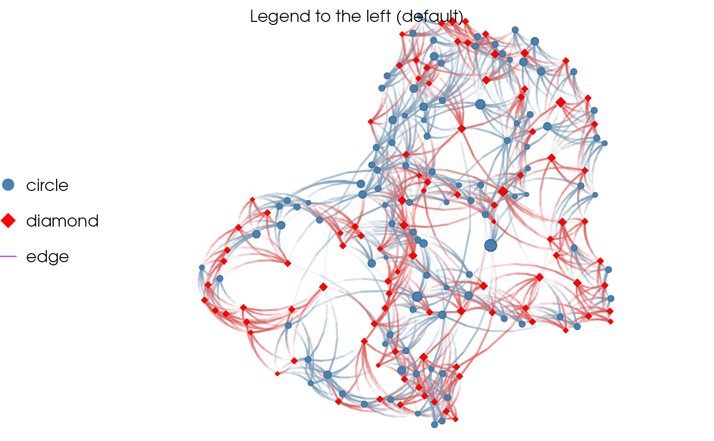

Legends in grid graphics is a bit more complicated than in base graphics.
The function nplot_legend is a wrapper of grid::legendGrob() that makes
the process easier. Besides labels, the main visual arguments for the
figure ar passed through the gp argument (see examples).
nplot_legend( g, labels, pch, gp = grid::gpar(), ..., packgrob.args = list(side = "left") ) # S3 method for netplot_legend print(x, y = NULL, newpage = TRUE, ...)
| g | An object of class netplot. |
|---|---|
| labels | Character vector of labels. |
| pch | See |
| gp | An object of class |
| ... | Further arguments passed to |
| packgrob.args | List of arguments passed to |
| x | An object of class |
| y | Ignored. |
| newpage | Logical scalar. When |
A frame grob.
library(igraph) library(netplot) set.seed(1) x <- sample_smallworld(1, 200, 5, 0.03) V(x)$nsides <- sample(c(10, 4), 200, replace = TRUE) g <- nplot( x, vertex.nsides = V(x)$nsides, vertex.color = ifelse(V(x)$nsides == 4, "red", "steelblue"), edge.line.breaks = 5 )#> Error in nplot.default(x = x, edgelist = igraph::as_edgelist(x, names = FALSE), layout = layout, vertex.size = vertex.size, vertex.label = vertex.label, edge.width = edge.width, skip.arrows = skip.arrows, ...): object 'nsides' not foundnplot_legend( g, labels = c("circle", "diamond", "edge"), pch = c(21, 23, NA), gp = gpar( fill = c("steelblue", "red", NA), lwd = c(NA, NA, 1), col = c(NA, NA, "purple") ) )#> Error in is.grob(grob): object 'g' not foundgrid.text("Legend to the left (default)", y = unit(.95, "npc"), just = "bottom")nplot_legend( g, labels = c("circle", "diamond", "edge"), pch = c(21, 23, NA), gp = gpar( fill = c("steelblue", "red", NA), lwd = c(NA, NA, 1), col = c(NA, NA, "purple") ), # These two extra options set the legend to the bottom packgrob.args = list(side = "bottom"), ncol = 3 )#> Error in is.grob(grob): object 'g' not foundgrid.text("Legend bottom", y = unit(.95, "npc"), just = "bottom")